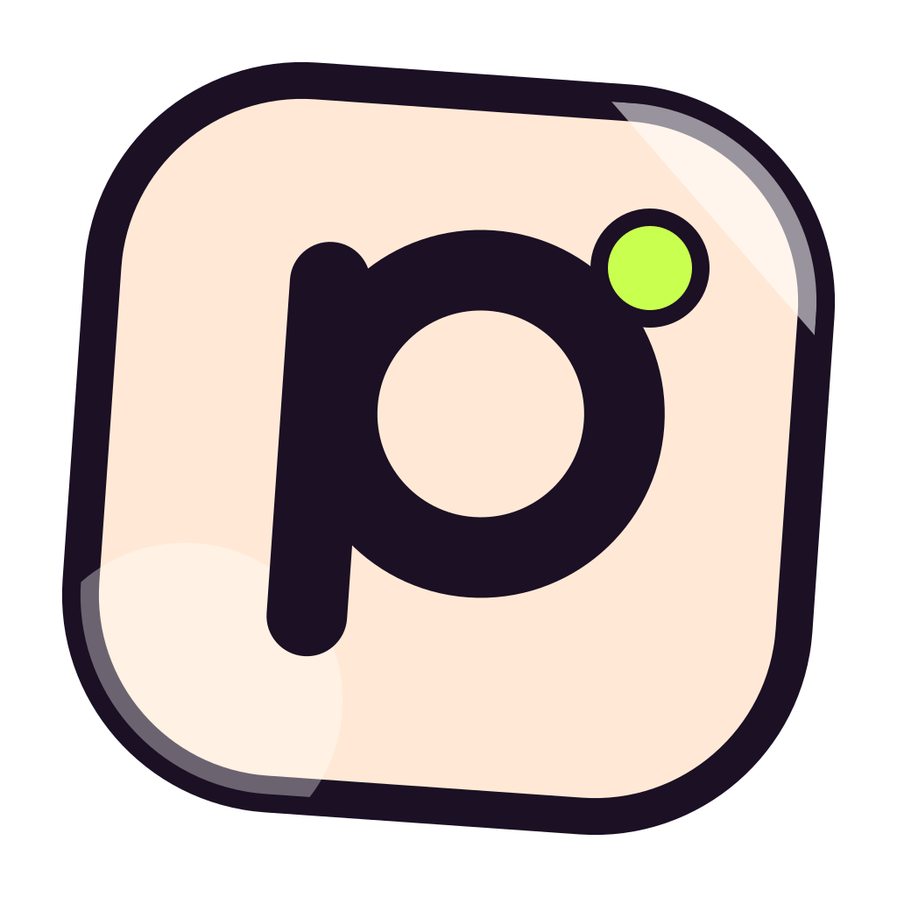

1 Whisper sticker
A tilted squircle sticker holding a fat speech bubble with three dots — the shush itself. Reads as “talking, quietly” at any size.
All three live inside the same sticker language: ink outlines, a hard offset edge, pink and lime, and one friendly shape that survives a 16px favicon. The wordmark stays live text in Bricolage, so it always matches the app.
A tilted squircle sticker holding a fat speech bubble with three dots — the shush itself. Reads as “talking, quietly” at any size.
The lowercase p drawn as a fat note on a cream sticker, with a folded corner and a lime wink. A monogram first, a note second — the most “brand” of the three.

A lime reply behind a pink whisper — the two-way chat, not just the send. The most social of the three, and the one that hints at the product.
The mark is exported at 16/32/48/96/128/180/192/256/384/512, plus a maskable 512 with the artwork inside the safe zone and a monochrome badge for notifications.
The wordmark stays text (Bricolage 800, tracking −0.04em) with the mark set beside it at 32–34px. No baked lettering, so the name never drifts from the typography.
Homepage header, auth layout brand, app tab bar (replacing the text-only “Psst”), PWA install icon, notification badge.
Minimum 24px for the mark, 16px favicon only. Never recolour the ink edge. Never place the mark on the same pink as its own fill. Clear space = the width of the bubble tail.